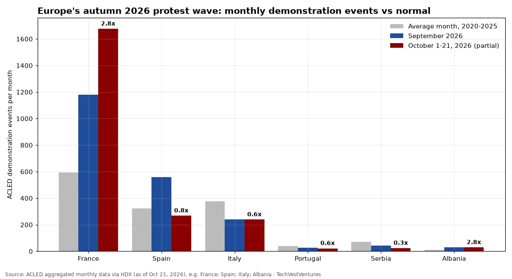
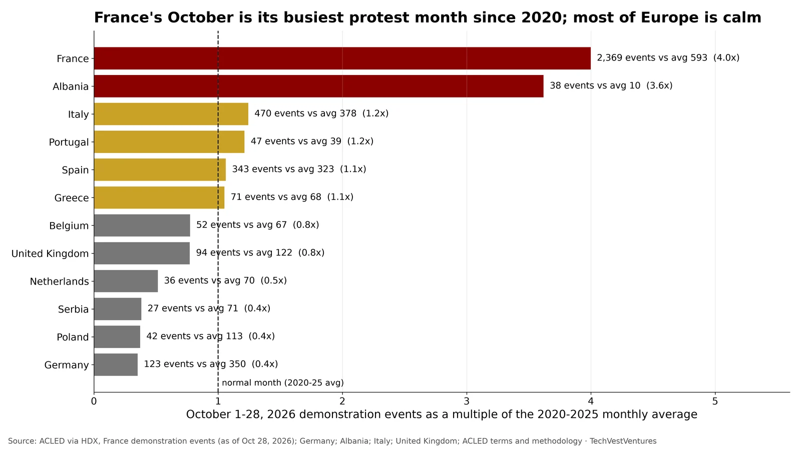

Q6. Europe Wave

ACLED demonstration events (protests plus riots) per month. Labels show the October 1-21 count as a multiple of each country's average month in 2020-2025. France: avg 593, Sep 1,181, Oct 1-21 1,676 (2020-25 record 2,108 in Mar 2023); Spain: avg 323, Sep 558, Oct 1-21 268 (2020-25 record 852 in Mar 2022); Italy: avg 378, Sep 239, Oct 1-21 239 (2020-25 record 880 in Feb 2022); Portugal: avg 39, Sep 28, Oct 1-21 22 (2020-25 record 89 in Jan 2024); Serbia: avg 71, Sep 43, Oct 1-21 24 (2020-25 record 421 in Feb 2025); Albania: avg 10, Sep 31, Oct 1-21 29 (2020-25 record 45 in Apr 2021). The wave is mostly French: France's first three weeks of October already ran 2.8 times its normal month. Albania (small numbers, but nearly 3x normal) and Spain's September spike are the other outliers; Italy, Portugal and Serbia are at or below their 2020-25 norm, so 'Europe in revolt' headlines overstate it. ACLED's cut-off of Oct 21 misses France's Oct 24 day, so expect upward revisions.
Sources: ACLED aggregated monthly data via HDX (as of Oct 21, 2026), e.g. France Spain Italy Albania

ACLED demonstration events (protests plus riots) for Oct 1-28, 2026, as a multiple of each country's average month in 2020-2025 (HDX files as of Oct 28). France logged 2,369 events in 28 days, 4.0 times its normal month and above its 2020-25 record of 2,108 (March 2023, the pension-reform protests). Albania (38 events, 3.6x) is the only other big outlier; Italy (470, 1.2x), Portugal, Spain and Greece are near normal, and Germany (123, 0.35x), Poland, Serbia and the Netherlands are well below normal.
- Update of R1 (cut-off Oct 21): France rose from 1,676 to 2,369 events in one more week, now including the Oct 24 day.
- Italy roughly doubled from 239 (Oct 1-21) to 470, moving above normal for the first time this autumn.
- Oct 31 protests are not yet in the data, so France's October total will rise further.
Note: ACLED counts events, not participants: one huge march and one small sit-in both count as one. Coverage depends on media reporting, which can vary by country and over time.
Sources: ACLED via HDX, France demonstration events (as of Oct 28, 2026) Germany Albania Italy United Kingdom ACLED terms and methodology